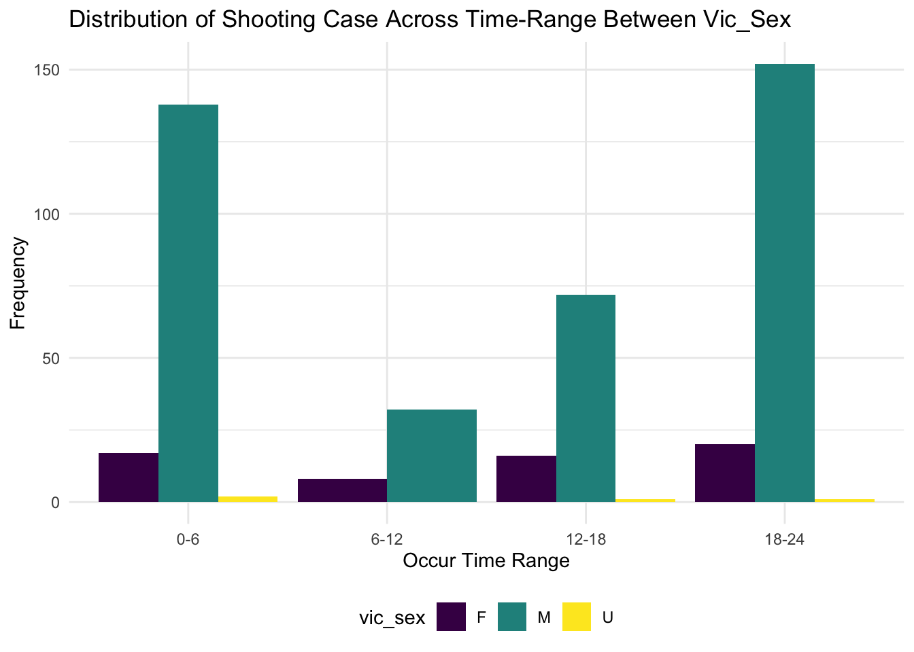

library(tidyverse)
library(rvest)
library(knitr)
theme_set(theme_minimal() + theme(legend.position = "bottom"))
options(
ggplot2.continuous.colour = "viridis",
ggplot2.continuous.fill = "viridis"
)
scale_colour_discrete = scale_colour_viridis_d
scale_fill_discrete = scale_fill_viridis_dLoad the dataset NYPD shooting incident
shooting =
read_csv("./data/NYPD_Shooting.csv") %>%
janitor::clean_names()## Rows: 23865 Columns: 19## ── Column specification ────────────────────────────────────────────────────────
## Delimiter: ","
## chr (11): OCCUR_DATE, OCCUR_TIME, BORO, LOCATION_DESC, PERP_AGE_GROUP, PERP_...
## dbl (5): INCIDENT_KEY, PRECINCT, JURISDICTION_CODE, Latitude, Longitude
## lgl (1): STATISTICAL_MURDER_FLAG##
## ℹ Use `spec()` to retrieve the full column specification for this data.
## ℹ Specify the column types or set `show_col_types = FALSE` to quiet this message.check null
shooting %>%
summarise_all(~ sum(is.na(.)))## # A tibble: 1 × 19
## incident_key occur_date occur_time boro precinct jurisdiction_code
## <int> <int> <int> <int> <int> <int>
## 1 0 0 0 0 0 2
## # … with 13 more variables: location_desc <int>, statistical_murder_flag <int>,
## # perp_age_group <int>, perp_sex <int>, perp_race <int>, vic_age_group <int>,
## # vic_sex <int>, vic_race <int>, x_coord_cd <int>, y_coord_cd <int>,
## # latitude <int>, longitude <int>, lon_lat <int>For col boro
shooting %>%
mutate(boro = as.factor(boro)) ## # A tibble: 23,865 × 19
## incident_key occur_date occur_time boro precinct jurisdiction_code
## <dbl> <chr> <chr> <fct> <dbl> <dbl>
## 1 226323781 3/30/2021 23:45:00 QUEENS 100 0
## 2 226323779 3/30/2021 16:20:00 BROOKLYN 73 2
## 3 226323782 3/30/2021 23:15:00 BRONX 42 2
## 4 226321042 3/30/2021 13:35:00 MANHATTAN 7 0
## 5 226320600 3/30/2021 22:23:00 BRONX 45 0
## 6 226321041 3/30/2021 2:25:00 BRONX 44 0
## 7 226323780 3/30/2021 21:06:00 MANHATTAN 34 0
## 8 226321324 3/30/2021 16:25:00 BROOKLYN 73 0
## 9 226266743 3/29/2021 23:13:00 MANHATTAN 23 0
## 10 226230158 3/28/2021 22:00:00 BROOKLYN 60 0
## # … with 23,855 more rows, and 13 more variables: location_desc <chr>,
## # statistical_murder_flag <lgl>, perp_age_group <chr>, perp_sex <chr>,
## # perp_race <chr>, vic_age_group <chr>, vic_sex <chr>, vic_race <chr>,
## # x_coord_cd <dbl>, y_coord_cd <dbl>, latitude <dbl>, longitude <dbl>,
## # lon_lat <chr>For location_desc (maybe can change the name again )
shooting %>%
mutate(location_desc = replace_na(location_desc, "NONE")) %>%
mutate(location_desc = as.factor(location_desc)) %>%
mutate(location_desc = fct_relevel(location_desc, c("NONE", "MULTI DWELL - PUBLIC HOUS", "MULTI DWELL - APT BUILD", "PVT HOUSE", "GROCERY/BODEGA", "BAR/NIGHT CLUB", "HOSPITAL", "COMMERCIAL BLDG", "DEPT STORE", "GAS STATION", "HOTEL/MOTEL", "SMALL MERCHANT", "RESTAURANT/DINER", "CLOTHING BOUTIQUE", "FACTORY/WAREHOUSE", "SOCIAL CLUB/POLICY LOCATI"))) %>%
mutate(location_desc = recode(location_desc,
"NONE" = "none",
"MULTI DWELL - PUBLIC HOUS" = "public_house",
"MULTI DWELL - APT BUILD" = "apt_building",
"PVT HOUSE" = "pirvate_house",
"GROCERY/BODEGA" = "grocery_bodega",
"BAR/NIGHT CLUB" = "bar_club",
"HOSPITAL" = "hospital",
"COMMERCIAL BLDG" = "commercial",
"DEPT STORE" = "dept_store",
"GAS_STATION" = "gas_station",
"HOTEL/MOTEL" = "hotel",
"SMALL MERCHANT" = "merchant",
"RESTAURANT/DINER" = "restaurant",
"CLOTHING BOUTIQUE" = "clothing",
"FACTORY/WAREHOUSE" = "factory",
"SOCIAL CLUB/POLICY LOCATI" = "club"
))## # A tibble: 23,865 × 19
## incident_key occur_date occur_time boro precinct jurisdiction_code
## <dbl> <chr> <chr> <chr> <dbl> <dbl>
## 1 226323781 3/30/2021 23:45:00 QUEENS 100 0
## 2 226323779 3/30/2021 16:20:00 BROOKLYN 73 2
## 3 226323782 3/30/2021 23:15:00 BRONX 42 2
## 4 226321042 3/30/2021 13:35:00 MANHATTAN 7 0
## 5 226320600 3/30/2021 22:23:00 BRONX 45 0
## 6 226321041 3/30/2021 2:25:00 BRONX 44 0
## 7 226323780 3/30/2021 21:06:00 MANHATTAN 34 0
## 8 226321324 3/30/2021 16:25:00 BROOKLYN 73 0
## 9 226266743 3/29/2021 23:13:00 MANHATTAN 23 0
## 10 226230158 3/28/2021 22:00:00 BROOKLYN 60 0
## # … with 23,855 more rows, and 13 more variables: location_desc <fct>,
## # statistical_murder_flag <lgl>, perp_age_group <chr>, perp_sex <chr>,
## # perp_race <chr>, vic_age_group <chr>, vic_sex <chr>, vic_race <chr>,
## # x_coord_cd <dbl>, y_coord_cd <dbl>, latitude <dbl>, longitude <dbl>,
## # lon_lat <chr>sort by date, arrange according to year and month * compare the same month in different year
shooting %>%
separate(occur_date, into = c("month", "day", "year")) %>%
mutate(month = as.numeric(month)) %>%
arrange(year, month) %>%
# mutate(month = month.name[month]) %>%
mutate(year = as.character(year))## # A tibble: 23,865 × 21
## incident_key month day year occur_time boro precinct jurisdiction_co…
## <dbl> <dbl> <chr> <chr> <chr> <chr> <dbl> <dbl>
## 1 10333307 1 31 2006 12:00:00 QUEENS 103 0
## 2 10333308 1 31 2006 15:00:00 BROOKLYN 83 0
## 3 10240263 1 30 2006 20:05:00 BROOKLYN 73 0
## 4 10333306 1 30 2006 22:45:00 BROOKLYN 73 0
## 5 10240260 1 30 2006 10:28:00 BROOKLYN 73 2
## 6 10240261 1 29 2006 2:30:00 BRONX 44 0
## 7 10240256 1 29 2006 1:12:00 QUEENS 105 0
## 8 10240262 1 29 2006 2:42:00 BRONX 50 0
## 9 10240257 1 29 2006 5:00:00 MANHATTAN 13 0
## 10 10240252 1 28 2006 3:05:00 BROOKLYN 83 0
## # … with 23,855 more rows, and 13 more variables: location_desc <chr>,
## # statistical_murder_flag <lgl>, perp_age_group <chr>, perp_sex <chr>,
## # perp_race <chr>, vic_age_group <chr>, vic_sex <chr>, vic_race <chr>,
## # x_coord_cd <dbl>, y_coord_cd <dbl>, latitude <dbl>, longitude <dbl>,
## # lon_lat <chr>Try a plot by boro
shooting %>%
ggplot(aes(x = boro, y = precinct)) +
geom_point(alpha = .5) +
geom_smooth(method = "lm", se = FALSE) +
labs(
title = " ",
x = "Boror",
y = "Precint"
) ## `geom_smooth()` using formula 'y ~ x'